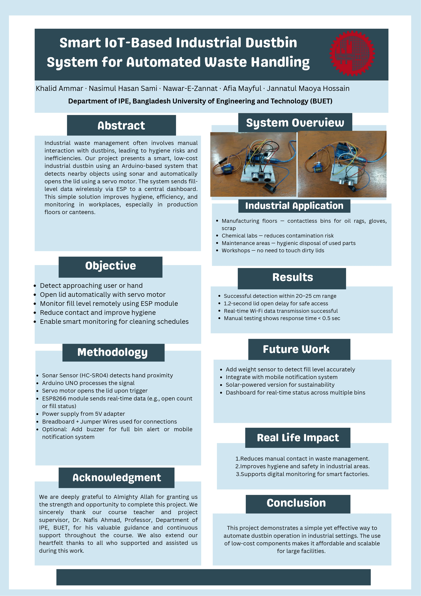

In industrial environments, monitoring the real-time position and speed of AGVs (Automated Guided Vehicles) is essential for safety, efficiency, and coordination. This project designs an AGV prototype with sensors for precise speed and position tracking, along with wireless data transmission to a server. Additionally, the system calculates the AGV’s yearly utilized operational time.
| Device / Component | Quantity | Task / Function |
|---|---|---|
| Magnetic Sensor | 1 | Detects position markers along the AGV path |
| IR Sensor Rotary Encoder | 1 | Tracks wheel rotation for speed/distance measurement |
| Laser Sensor | 1 | Measures displacement from a reference point |
| DC Motor | 2 | Drives the AGV wheels |
| Servomotor | 1 | Steers or manipulates AGV components |
| Microcontroller (Arduino) | 1 | Main controller for sensors and actuators |
| ESP32 Wi-Fi Module | 1 | Uploads real-time data to server |
| Memory (EEPROM/Flash) | 1 | Stores yearly operation time |
This AGV solution enables smarter, safer, and more efficient industrial material handling with real-time and historical analytics.

#define TRIG_PIN 9
#define ECHO_PIN 10
void setup() {
Serial.begin(9600);
pinMode(TRIG_PIN, OUTPUT);
pinMode(ECHO_PIN, INPUT);
}
void loop() {
long duration;
float distance;
digitalWrite(TRIG_PIN, LOW);
delayMicroseconds(2);
digitalWrite(TRIG_PIN, HIGH);
delayMicroseconds(10);
digitalWrite(TRIG_PIN, LOW);
duration = pulseIn(ECHO_PIN, HIGH);
distance = duration * 0.0343 / 2;
Serial.print("Distance:");
Serial.println(distance);
delay(500);
}
ESP32 Code (Wi-Fi Upload):
#include <WiFi.h>
#include <HTTPClient.h>
const char* ssid = "Your_SSID";
const char* password = "Your_PASSWORD";
String baseURL = "http://ipe20-buet.top/get_data.php?";
#define RXD2 16 // ESP32 GPIO16 to Arduino UNO TX
#define TXD2 17 // ESP32 GPIO17 to Arduino UNO RX
void setup() {
Serial.begin(115200);
Serial2.begin(9600, SERIAL_8N1, RXD2, TXD2);
WiFi.begin(ssid, password);
Serial.print("Connecting to WiFi");
while (WiFi.status() != WL_CONNECTED) {
delay(500);
Serial.print(".");
}
Serial.println("\nWiFi connected");
}
void loop() {
if (Serial2.available()) {
String sensorData = Serial2.readStringUntil('\n');
sensorData.trim();
Serial.println("Received from Arduino: " + sensorData);
String fullURL = baseURL + "&g=groupB4&sn=soil_sensor&sd=" + sensorData + "&p=passB4&format=json";
if (WiFi.status() == WL_CONNECTED) {
HTTPClient http;
http.begin(fullURL);
int httpCode = http.GET();
if (httpCode > 0) {
String response = http.getString();
Serial.println("Server response: " + response);
} else {
Serial.println("HTTP GET failed. Code: " + String(httpCode));
}
http.end();
} else {
Serial.println("WiFi not connected.");
}
}
delay(2000);
}